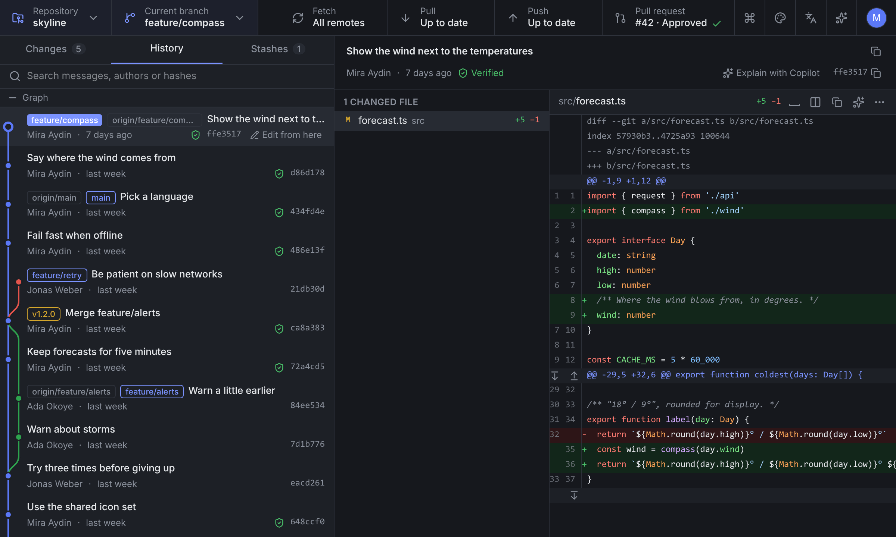
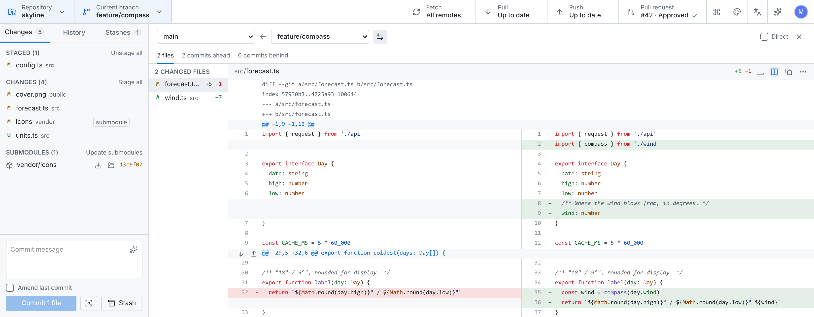

> git gud at git.
A fast, open-source Git GUI.
GitGud aims to be as approachable as GitHub Desktop while exposing more of Git's power: history, branches, stash, merges, conflict resolution and interactive rebase, without hiding what Git is doing.
- Linux
- Windows
- macOS
Download the latest release View the source
Early development. Expect rough edges.

features
Git, without the hiding.
-
Commit exactly what you want
Click line numbers in a diff to stage, unstage or discard single lines, Shift+click for a range, or take a whole hunk from its header. Amend the last commit, or commit with Ctrl+Enter.
-
Undo that actually undoes
Undo right after a commit, amend, merge, cherry-pick, revert, reset (even a hard one), branch or stash deletion, or discarded changes. Nothing done since then gets overwritten.
-
Read diffs properly
Unified or side by side, changed words marked, whitespace ignored if you like, syntax highlighting in your theme's colors for 45+ languages. Images are compared as images, with a swipe slider.
-
Find your way through history
A commit graph across all branches, remote branches and tags. Search by message, author or hash, follow a file across renames, and blame it on disk or at any commit.
-
Rewrite it
Drag commits into a new order, then squash, fixup, reword or drop them. Interactive rebase, at the end of a drag.
-
Merge and resolve conflicts
Resolve block by block (ours, theirs or both), or take one side for the whole file. Pull asks whether to merge or rebase when both sides moved on, or follows your pull.rebase setting.
-
Pull requests, in the app
Create one for the current branch (Ctrl+R), as a draft if you like. The toolbar shows its checks and review, and any open pull request checks out in a click, forks included.
-
Sign commits, keep the key
Sign with a GPG or SSH key and History shows Verified, Unverified or Bad signature. Tokens for GitHub, GitLab, Gitea and Forgejo stay in the OS keychain, and each is only sent to its own host.

also in the box
Branches, stashes, worktrees and themes.
-
Branches and remotes
Create, filter, switch, rename and delete branches; unmerged ones ask before they go. Add, rename or remove remotes, and add a fork's parent as upstream in one click.
-
Submodules and worktrees
Submodules show the commit they are on, and open as their own repository. Worktrees add, open and remove, and a branch checked out elsewhere says where.
-
Make it yours
40 themes with live previews, your accent color, your code font, blue and orange diffs if red and green look alike. Ten languages, switched without a restart.
-
GitHub Copilot, if you have it
Commit and squash messages, pull request descriptions, reviews of staged changes, explanations of commits and git errors. Each action can be turned off from the Copilot menu.
keyboard
Most of it without the mouse.
| Ctrl+K | Command palette, for every action |
|---|---|
| Ctrl+Enter | Commit, from the message box |
| Ctrl+Shift+D | Compare a branch with the current one |
| Ctrl+Shift+S | Stash changes |
| Ctrl+R | Create or view the branch's pull request |
| Ctrl+, | Appearance, themes and code font |
install
One file, then open a repository.
-
Linux
.AppImage · .deb · .rpm
-
Windows
.msi · .exe
-
macOS
.dmg for Apple Silicon and Intel
You need git installed. Builds are not code-signed yet, so Windows and macOS warn on first launch. The app updates itself after you click once (AppImage, Windows and macOS).